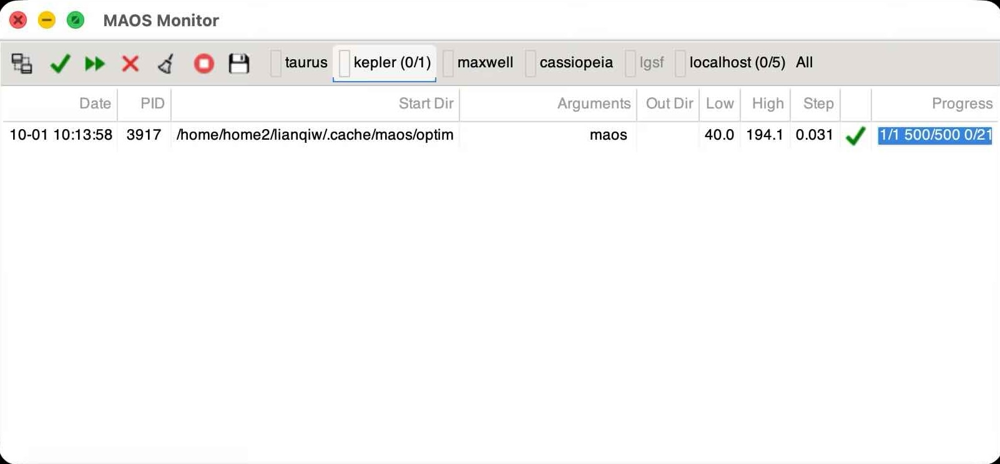
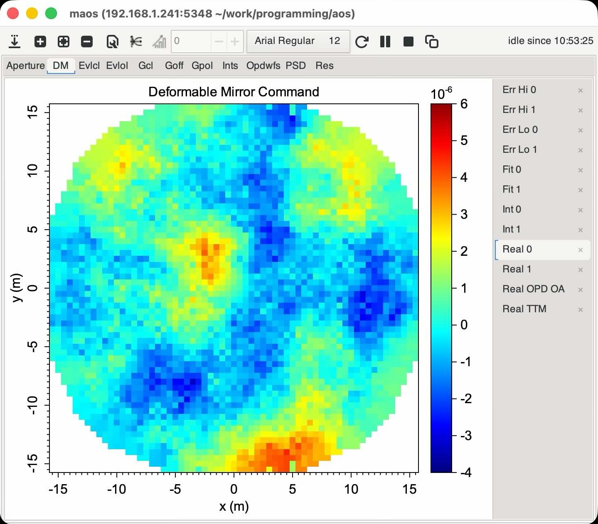

|
MAOS
Multithreaded Adaptive Optics Simulator
|
|
MAOS
Multithreaded Adaptive Optics Simulator
|
In linux, use the native package manager (apt for Debian/Ubuntu, rpm for Fedora/Centos/RHEL and derivatives) to install.
In macOS, it is convenient to use homebrew (https://brew.sh/) to install.
We recommend using different folders to 1) store the source code, 2) compile the code (different directory can be used for different compiling options), and 3) run simulations.
The preferred method is to use the always up-to-data Git version:
Download the tag version that is not formally released:
There are released version that comes with configure. Use this if the utilities mentioned above are not available. In this case, do not try to update the configure.ac file which will trigger regeneration of configure and require these utilities.
Instead of compiling the code, there are also pre-compiled binaries that can be downloaded. This option works the best when there is no desire to modify the code.
Next we create another folder, where we are going to compile the code. example:
You can replace optim with any directory name of your choice. The compiled executable is maos in the sub-folder bin of the compiling folder. You do not have to do make install to run the simulations, but if not, then you need to add optim/bin to your executable path (e.g. update your .bash_profile or .zshenv file $PATH variable).
The default compiler for the system is used with optimization flags. There are a few optional switches or additional components that can be enabled when calling configure.
To use a different compiler or enable debugging:
To enable GPU computing, first install nvidia graphics driver and cuda software development toolkit (SDK), and then issue the following command to ensure graphics configuration is correct: nvidia-smi. You should see all your nvidia gpus are listed. When clang is used as the C compiler, it will be used instead of nvcc to compute the cuda code.
The configure can automatically detect cuda if nvcc is in the path, or if cuda is installed in /usr/local/cuda. For other locations, you need to pass the cuda directory to configure:
$src_dir/configure --with-cuda=$cuda_dir
When GPU compute is compiled in maos and Nvidia GPUs are available, maos will make use of all suitable GPUs to run simulation. If that is not desirable, the GPU compute can be disabled at run time by passing -g-1 to maos. Different set of GPU can also be selected by passing one or multiple -gi or -Gn:
To compile mex routines for matlab, pass the matlab directory to configure if it is not in $PATH:
The compiled mex routines are in mex folder in the compilation directory.
read() and write() are for handling .bin and .fits files.aolib() exports many useful routines for use in matlab. Run aolib() to see the list of available functions.maos() can be used to run maos within matlab. Run maos() to see instructions.For macOS, it is the simplest to install gtk and gtk-mac-integration (only for gtk+-3) using homebrew (or macport). For manual install, follow the instructions on page to install gtk+ for osx and configure the envirionmental parameters. Make sure pkg-config is in the PATH. Version 2, 3, and 4 are supported. Highest version is chosen unless explicitly disabled (see below).
Now rerun autogen.sh, configure and make. Monitor and drawdaemon should appear in bin folder now. To select gtk version when multiple ones are available:
When maos is compiled with libwebsockets, there is a browser interface that can manage maos jobs, as well as plot current running jobs. The URL for this interface can be found in the output when maos runs. A tutorial is available at Youtube.
When GTK+ libraries are found in the system, additional executables will be compiled, drawdaemon, drawres, drawbin and monitor in the bin folder.
drawdaemon is launched automatically when plotting commands are issued in simulation (maos plot.all=1) or in post processing with drawres or drawbin monitor can be used to monitor jobs in this and linked machines.drawres can be used to automatically plot the results folder.drawbin can be used to automatically plot the OPDs or maps.In order to use monitor to monitor jobs in different machines, follow these steps:
Create a folder .aos in your home folder, create two files in there. Put these files in all the machines you want to monitor.

Once the monitor is running, it will display running jobs on each connected host. Right click on a running job and select Plot selected jobs will launch drawdaemon and start plotting the telemetry data in realtime. This works for local and remote host. Multiple drawdaemon windows can be started for the same or different jobs.
An alternative way to launch drawdaemon is to include plot.setup=1 plot.run=1 or plot.all=1 in maos command line.
Remote plotting: when a job is running remotely or in a headless machine, and drawres, drawbin, or maos plotting is issued, the monitor can open a drawdaemon in the local computer and plot remotely.

drawres result_folder can be used to plot the results. Wildcards are supported to match many folders. It will launch drawdaemon using an active monitor in a remote machine if the current shell does not have DISPLAY set. This can be used to view results remotely.
MAOS comes with a few useful python routines location in scripts/ folder:
MAOS results. It also imports libaos.py and draw.py MAOS library routines via aolib.so and ctypes. It contains read and write that can also read and write bin and fits files.For libaos.py to work, an environment variable MAOS_AOLIB need to set to the path of aolib.so.
It is possible to retrieve or override MAOS internal data when it is running. See the following steps:
First, set up shell environment so that the libaos.py can find it.
Then open ipython (or python) and run the following
import maos_client # import the modulemaos_client.connect(host,port) # the host and port is the same as used by monitormaos_client.get_list() # get list of available variablesmaos_client.get_var(name) # get variable with the namemaos_client.get_all() # get all variablesmaos_client.pause(0) # unpause maosmaos_client.pause(1) # pause or step maos.